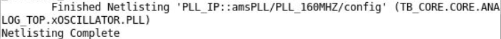

Creating a Netlist for Config or Schematic Views
Once you have updated the hierarchy after switching the instance bindings
It generates an incremental file, clips.f, along with the other necessary files.
When netlisting completes, messages are displayed in the terminal, as shown below:

Return to top